АНГАБАЕВ СОЛБОН ДОНДУПОВИЧ (02.02.1931 - 05.11.2001 гг.)Народный поэт Бурятии, заслуженный работник культуры РБ. Родился в с. Гарга Баргузинского аймака Бурят-Монгольской АССР. «Это край, где бьют горячие источники стоят как воины на страже, высокие гольцы, трубят маралы», - пишет в своей автобиографии поэт. Именно поездкой на родину, общением с природой навеяны первые стихи четырнадцатилетнего воспитанника республиканской бурятской школы-интерната, которые были опубликованы в районной газете «Курумканский колхозник». Начало своего литературного творчества С. Ангабаев связывает с выходом подборки стихов в республиканской газете «Буряад унэн» в 1949 г. В этом же году участвовал во 2-й республиканской конференции молодых писателей. После успешного окончания школы-интерната с серебряной медалью он поступил в Литературный институт им. А. М. Горького, который окончил в 1957 году. Первый сборник его стихов «Табунная степь» был издан на русском языке в Москве (1956, «Молодая гвардия»), в переводе известного поэта-переводчика, В. Журавлева. С тех пор им изданы на бурятском и русском языках семнадцать сборников стихов, среди которых «Загадка Байкала» (Улан-Удэ, 1958), «Забайкалье» (Москва, 1962), «Оттепель» (Улан-Удэ, 1964), «Зовы» (Москва, 1974), «Думы» (Улан-Удэ, 1975), «Сандаловое дерево» (Улан-Удэ, 1979), «Водопад» (Москва, 1979), «Зеница ока» (Улан-Удэ, 1983), «Бархан уула» (Улан-Удэ, 1991) и другие. Автор повестей «Спасибо, товарищи» (1961), «На береги реки» (1966), сборника очерков, статей и эссе «Жива вода» (1985) на бурятском языке. С. Ангабаев проявил себя как поэт лирического дарования Постоянная тяга поэта к поиску новых форм была отмечена на обсуждении творчества С. Ангабаева в Союзе писателей России в 1984 гг. Член Союза писателей СССР (1959). Народный поэт Бурятии (1994). Мемориальная доска находится по адресу пр. Победы, 11. |
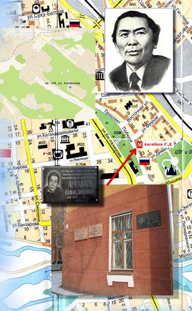 |
БАДМАЕВ ЦЫРЕН-БАЗАР БАДМАЕВИЧ (1928 - 1982 гг.)Поэт. Родился в улусе Саган-Шулутай Агинского национального округа Читинской области. После завершения учебы в БГПИ им. Д. Банзарова он был направлен Союзом писателей республики в Литературный институт им. М. Горького, который успешно закончил в 1953 г. Затем работал зав. отделом в газете «Бурят-Монгольский комсомолец», в Министерстве культуры Бурятии, зам. редактора журнала «Байкал», главным редактором Бурятского книжного издательства, зав. литературной частью Бурятского театра драмы им. X. Намсараева, старшим редактором РНМЦ Министерства культуры республики. Ц.-Б.Бадмаев - автор более 30 книг на бурятском и русском языках. Первый поэтический сборник «Утреннее солнце» вышел в свет в 1952 г. на родном языке. Поэт внес большой вклад в развитие бурятской детской литературы. Многие его стихи и рассказы включены в школьные хрестоматии. Лучшие стихи из книг на бурятском языке составили однотомник «Избранное» (1969). Стихи Ц.-Б. Бадмаева неоднократно издавалась в московских издательствах. Так, в издательстве «Детская литература» вышли книги: «Хитрый конь», «У козленка выросли рога», «Большой хуралдаан», «Потешные ягнята», в издательстве «Малыш» - «Маленький табунщик», «Готовое седло», в издательстве «Молодая гвардия»—, «Степь крылатая»; в издательстве «Советская Россия» - «Бурлит Селенга». Книги для детей выходили в Чите, Иркутске, Свердловске, Новосибирске, а также в Монголии. Написал около 30 песен, многие из которых популярны и сейчас. Автор пьес для кукольного театра, сценариев, документальных фильмов, сборника рассказов «Среди друзей» (1956), повести «Сережа в стране Будамшу» (1977). Член Союза писателей СССР (1957). Награжден медалями. Мемориальная доска открыта 16 октября 2003 г. и находится по адресу пр. Строителей, 36. 20 октября 2008 г. имя поэта Ц.-Б. Бадмаева присвоено библиотеке-филиалу №10 МАУ "Централизованная библиотечная система г. Улан-Удэ". |
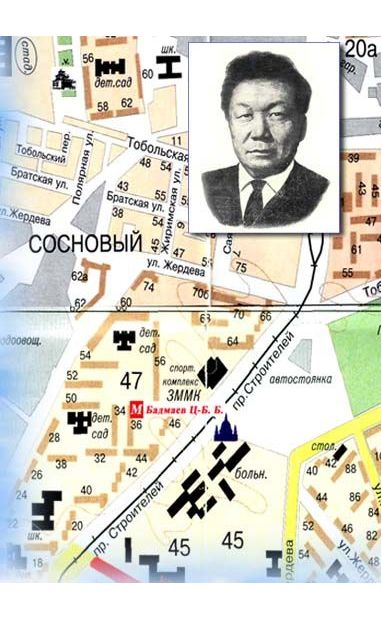 |
БАЛДАНО НАМЖИЛ ГАРМАЕВИЧ (1907 - 1984 гг.)Драматург, общественный деятель. Родился в с. Оронгой Иволгинского района Бурятии. Учился в Жаргалантуйской церковно-приходской школе, находился на комсомольской работе. В 1932г., окончив Бурятский техникум искусств, связал свою судьбу с Бурятским театром драмы, где проработал до 1952 г. Был артистом, режиссером, художественным руководителем, директором. С 1954 по 1965 г. Н. Балдано работал председателем правления Союза писателей Бурятии. Длительное время был председателем Верховного Совета Бурятии. С 1928 г. Н. Балдано написал около 40 драматических произведений. Такие пьесы, как «Кулак и подкулачник» (1930), «Прорыв» (1932), «Кто он» (1933) «Один из многих» (1935), «Два друга» (1936), «Энхэ-Булат-батор» (1938), «Эржэн» (1940), «Рыбаки Байкала». «Бабжа-Барас батор» (1943) и др. стали явлением в культурной жизни республики. В 1932 г. пьесой «Прорыв» был открыт Бурятский театр драмы. В дни Декады литературы и искусства в Москве в 1940 и 1959 гг. шли спектакли, поставленные по его пьесам. Пьесы Н. Балдано ставились и в Монголии. Немало интересных произведений создал писатель и на фольклорном материале. Это - либретто опер «Энхэ-Булат батор», «Побратимы» и балета «Красавица Ангара». Большой заслугой писателя является составление сводного варианта бурятского героического эпоса «Гэсэр» (1943-1966). Лучшие драматические произведения писателя переведены и изданы на русском языке. Член Союза писателей СССР (1935). Народный писатель Бурятии (1973). Лауреат Государственной премии Бурятии: Заслуженный деятель искусств России. Народный артист республики. Награжден орденами Октябрьской, революции, Трудового Красного знамени и «Знак Почета», многими медалями. Мемориальная доска находится по адресу пр. Победы, 11. Улица, названная именем писателя, находится в Железнодорожном районе города, в пос. Орешково. Имя улице было присвоено в октябре 2007 г. к 100-летию со дня рождения писателя. |
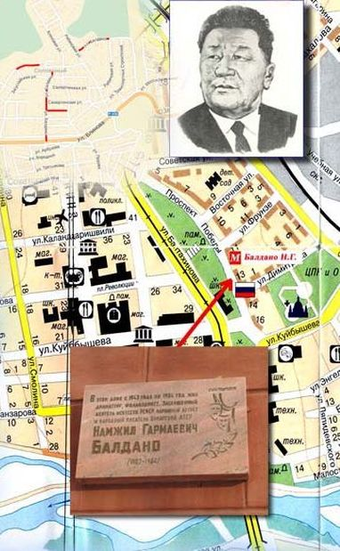 |
БАЛЬБУРОВ АФРИКАН АНДРЕЕВИЧ (05.05.1919 - 19.01.1980 гг.)Прозаик, общественный деятель. Родился в с. Корсунгай Аларского района Усть-Ордынского национального округа Иркутской области. Рано начал трудовую жизнь, работал слесарем на ПВЗ. Служил в армии. После демобилизации занимался научной, журналистской и писательской деятельностью. Он был одним из инициаторов создания журнала «Байкал», долгие годы работал его главным редактором. А. Бальбуров - автор многих сборников рассказов, повестей на русском языке, включая первую книгу - «Песню об ушедших кошмарах» (1938), «Новеллы» (1941), «У нас в Зергетуе» (1959), «Приказываю жить» (совместно с Д. Хилтухиным, 1963), «Мы живем за Байкалом» (1976), и др., изданных в Улан-Удэ. В Москве выходили сборники «Двенадцать моих драгоценностей» (1975), «Озаренные» (1977), «Золотой корень» (1980) и др. Широко известен его исторический роман «Поющие стрелы» (1961), неоднократно переизданный в Улан-Удэ и Москве. В последние годы жизни писатель работал над второй частью дилогии - романом «У пяти берез». Член Союза писателей СССР (1939). Народный писатель Бурятии (1973). Лауреат Государственной премия Бурятии. Награжден медалями. Мемориальная доска находится по адресу пр. Победы, 7. В связи с проведением 05.05.2004 г., торжеств, посвященных 85-летию со дня рождения писателя Приказом Комитета городского хозяйства и строительства от 15.04.2004 №103; Ф.Р.-1724. Оп.1. Д.1408. Л.122, переименован Театральный проезд в проезд Бальбурова в Железнодорожном районе города. |
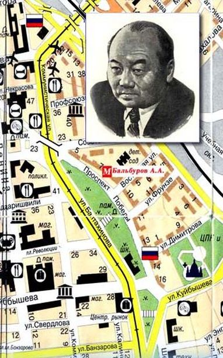 |
БАТОЖАБАЙ ДАШИ-РАБДАН ОДБОЕВИЧ (25.08.1921 - 1977 гг.)Прозаик, драматург. Родился в с. Догой Агинского национального округа Читинской области: В 1936 г. после окончания средней школы поступил в Улан-Удэнский театральный техникум. В 1940 г. как артист театра принял участие в 1 декаде бурятского искусства и литературы в Москве. Участник Великой Отечественной войны. Служил летчиком в авиации дальнего действия. В 1957 г. окончил Литературный институт им. М.Горького. Автор повестей «Песня табунщика» (1955). «Кто твой учитель?» (1957), «Невскрытые конверты» (М. 1968), романа-трилогии «Похищенное счастье» (1965), неоднократно переиздававшегося в Улан-Удэ, Москве и за рубежом. Ему принадлежат многоактные пьесы: «Огни в реке» (1953), «Ход конем» (1954), «Барометр показывает бурю» (1957), «Сердечная рана» (1965), «Огненные годы» (1970), «Катастрофа» (1980) и др. В последние годы жизни писатель работал над романом «Горные орлы», изданного в Улан-Удэ (1976) и Москве (1978). В 1991 г. в Улан-Удэ была издана автобиографическая повесть «Рассказы беспокойного Рабдана» на бурятском языке, и книга В. Найдакова «Даширабдан Батожабай». Член Союза писателей СССР. Награжден орденом Трудового Красного Знамени, медалями. Мемориальная доска находится по адресу ул. Ленина, 63. "Присвоить имя бурятского писателя Даши-Рабдана Батожабая новой улице Советского района, пос. Стеклозавод" - Постановление Администрации г. Улан-Удэ от 24.11.1992 №331; Ф.Р.-2056. Оп.1. Д.10. Л.41. |
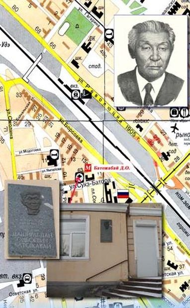 |
БЕЛОГЛАЗОВА РАИСА ВАСИЛЬЕВНА (1928 - 2002 гг.)Белоглазова Раиса Васильевна — прозаик, родилась 16 мая 1928 г. в г. Улан-Удэ. Ценой огромного напряжения физических и духовных сил она смогла преодолеть тяжелую болезнь, прикованная к постели, и явила собой яркий пример стойкости духа и целеустремленности. В 1951 г. окончила Центральные курсы иностранных языков заочного обучения в Москве. К этим годам относится начало её литературной деятельности. В 1955 г. выходит в свет первая книга Р. Белоглазовой «Наши соседи». Конец 1950-х гг. был одним из переломных в жизни и творчестве Р. Белоглазовой. По рекомендации В. Иванова она поступает на заочное отделение Литературного института им. М. Горького. Годы упорного творческого труда дают свои плодотворные результаты выходом книг повестей и рассказов «Незаконченная рукопись» (1958), «Ветка багульника» (1960), «Первая четверть» (1962), «Праздничным вечером» (1965), «Дождливый ноябрь» (1969) , Ритка (1973, 1978), «Горожане» (1987). Вершиной творчества Р. Белоглазовой является роман «Черёмуховый цвет», удостоенный в 1973 г. Государственной премии Бурятии в области литературы, как произведение «о душевной чуткости, о благородстве, о мужестве». Активно работает как детский писатель. Широко известны её детские книги «Девочка — неумелочка» (1958), «Борька и другие» (1965), «Пластилиновый мальчишка» (1980). Член Союза писателей СССР с 1957 г. Народный писатель Бурятии. Лауреат Государственной премии Бурятии. Заслуженный работник культуры Бурятии и России. 16 мая 2013 г. в день 85-летия со дня рождения состоялось открытие мемориальной доски Народному писателю Республики Бурятия Раисе Васильевне Белоглазовой на доме № 2а по ул. Комсомольской, где писательница прожила с 1978 по 2002 годы. |
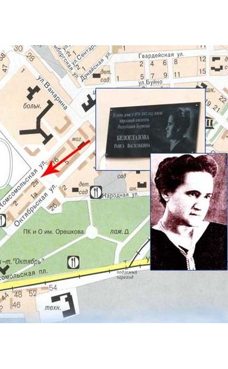 |
БРЯНСКИЙ КОНСТАНТИН ГАВРИЛОВИЧ (1910 - 1943 гг.)Поэт. Родился в с. Ключи Иволгинского района Бурятии. Рано осиротел. После окончания шестимесячных курсов был назначен редактором районной газеты «Красный Баунт», затем «Бурят-Монгольского комсомольца», корреспондентом ТАСС. Незадолго до войны был выдвинут на работу в аппарат горкома партии. Добровольцем ушел на фронт. На фронте был политруком, воевал в звании старшего лейтенанта. В 1943 г. был тяжело ранен в бою и скончался в госпитале в Рязани. К.Брянский — автор двух поэтических сборников «Слава Родине» (1942) и «Бессмертие» (1943), изданных в Улан-Удэ. Мемориальная доска находится по адресу ул. Куйбышева, 28. |
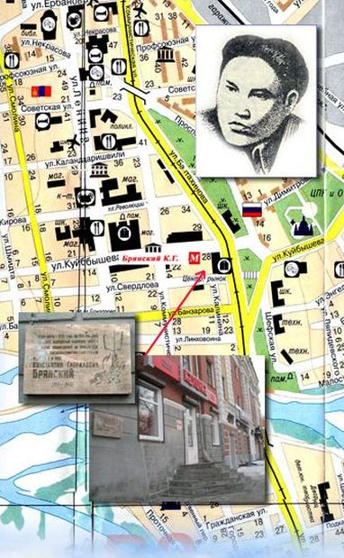 |
ДАВЫДОВ ДМИТРИЙ ПАВЛОВИЧ (23.09.1811 - 1888 гг.)Поэт. Родился в 1811 г. в г. Каинске Томской губернии (ныне г.Куйбышев Новосибирской области) в семье гидрографа. Его отец был близким родственником известного поэта-партизана, героя Отечественной войны 1812 г. Дениса Давыдова. Давыдовы происходили из родовых дворян Рязанской губернии Скопинского уезда села Спасского. Д.П.Давыдов, получив домашнее образование, 12 июня 1826 г. вступает в должность «канцелярского служителя» в Ачинский окружной суд Енисейской губернии. Служба тяготит его своим однообразием. 19 сентября 1829 г. он поступает, а 12 июня 1830 г. выдерживает испытание на звание учителя в Иркутской губернской гимназии. Тогда же назначается учителем 1 класса Троицкосавского уездного училища, где проработал до 1833 г. В 1833-1845 гг. Д.П.Давыдов сначала учитель, а затем штатный смотритель Якутского уездного училища (Якутск). Здесь он ведет интенсивную научно-краеведческую работу, много сил и внимания уделяет организации новых учебных заведений в Якутии, усовершенствованию учебного и воспитательного процессов в подведомственных ему учебных заведениях. В 1845-1846гг. участвует в знаменитой Северо-Восточной Сибирской экспедиции А.Ф. Миддендорфа, где он занимается геотермическими исследованиями и метеорологическими наблюдениями. Работы Д.П.Давыдова, выполненные в составе экспедиции, были напечатаны в трудах Миддендорфа, изданных Академией наук. С 17 августа 1846 г. по начало 1860 г. он занимает должность штатного смотрителя Верхнеудинского уездного училища, являясь то же время штатным смотрителем училищ Верхнеудинского округа. Верхнеудинское уездное училище в его бытность размещалось в каменном двухэтажном здании (постройка конца 30-х годов ХIX в.), которое казна под большим нажимом Д.П. Давыдова приобрела специально под училище (до этого оно занимало ветхий дом, тесный и мрачный). Ни одно уездное училище в Сибири в то время не обладало таким прекрасным помещением. Здесь он не только работал, но и жил. Д.П.Давыдов сделал большой вклад в дело просвещения как русского, так бурятского народов. Много сил и внимания уделяет он материальному положению училищ округа, усовершенствованию учебно-воспитательного процесса, требуя от преподавательского состава точности, аккуратности в работе и разумности в применении мер воздействия на учащихся. Он добивается открытия новых школ в округе (открыто пять), пансионатов при бурятских училищах, так необходимых при кочевом образе жизни бурят, улучшения качественного состава учителей, повышения их заработной платы, привлечения бурятских детей в уездное училище, подготовки из них учителей-бурят и многого другого. В работе был требователен, но справедлив. Благодаря гуманному отношению к подчиненным, пользовался большим уважением с их стороны, авторитетом, оставил после себя добрую память. Педагогическую деятельность Д.П.Давыдов сочетал с научной, а также писал стихи. Основные научные работы: «Якутско-русский словарь»(1852), «О древних памятниках аборигенов Забайкальской области» (1856), «О начале и развитии хлебопашества в Якутской области» (1858). В своих поэтических произведениях использовал сюжеты старинных народных преданий, бурятских поверий. Например: поэма «Ширэ гуйлгуху, или волшебная скамеечка», которую он начал писать еще в г. Троицкосавске, а опубликовал в 1859 г. в Верхнеудинске, «Ермак, покоритель Сибири», «Сибирский поэт», «Тунгус» и, наконец, самое известное «Песнь беглеца на Байкале» («Славное море, священный Байкал»), в несколько измененном виде ставшее народной песней. Оно было опубликовано в 1858 г. в газете «Золотое руно» (Петербург). Последние годы жизни (1860-1888) он живет сначала в Иркутске, а затем в Тобольске, несмотря на тяжелый недуг (в 1861 г. он потерял зрение), продолжает творческую и научную работу. В 1871 г. опубликованы «Поэтические картины» (Иркутск), продолжение поэмы о Ермаке. Скончался Д.П.Давыдов на 77 году (13 июня 1888 г.), похоронен на Завальном кладбище в г.Тобольске. Мемориальная доска находится по адресу ул. Коммунистическая, 16. |
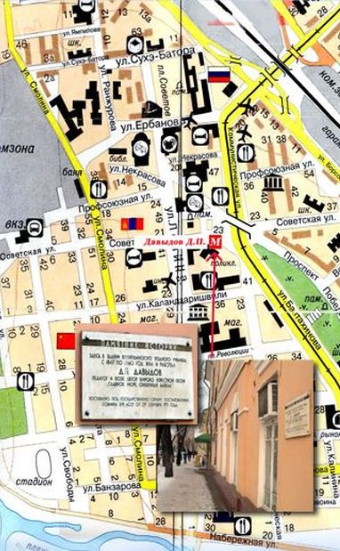 |
ДАМДИН0В НИКОЛАЙ ГАРМАЕВИЧ (06.01.1932 - 1999 гг.)Поэт, общественный деятель. Родился в улусе Угнасай Курумканского района Бурятии. В 1951 г., окончив среднюю школу с золотой медалью, поступил в Литературный институт им. М. Горького. После окончания института в 1956 г. учился на Высших сценарных курсах. Н. Дамдинов - автор более 30 поэтических сборников, изданных в Улан-Удэ и Москве. Вслед за первой ;книгой лирики «Баргузин» (1955), поэт издал на родном языке 12 книг стихов на родном языке. В переводе на русский язык вслед за «Гудящими соснами» (1959) вышли: поэма «Имя отца» (М., 1962), сборники стихов «Битва за солнце» (М., 1963), «Новая земля» (М., 1970), «Четыре неба» (1971), «Апрель» (1973),«Избранное» (Улан-Удэ, 1976), «На этой планете» (М., 1979), «Тропа Гэсэсра» (Улан-Удэ., 1985) и др. Избранные произведения Н. Дамдинова изданы в двух томах в издательстве «Советская Россия» (1981). Широко известны его поэмы «Имя отца», «Учитель мой -Ленин», «Песня о Доржи Банзарове», «Новая земля» и др. Перу поэта принадлежат венок сонетов «Звездный путь», литературный сценарий кинофильма «Пора таежного подснежника» (1958), сборники очерков «Будем знакомы, атом» (1964), статей «Границы поэзии» (1962), «Летопись народной жизни» (1974), документальная повесть «Родник в моем краю» (1990). Он — автор 4 пьес, поставленных в Улан-Удэ. Длительное время являлся председателем правления Союза писателей Бурятии, избирался депутатом Верховных Советов Бурятии и СССР. Член Союза писателей СССР (1958). Народный поэт Бурятии (1973). Лауреат Государственных премий Бурятии (1970) и России им. М. Горького (1975). Заслуженный работник культуры РФ (1984). Награжден орденами Трудового Красного Знамени и Дружбы народов, медалями. Мемориальная доска находится по адресу ул. Ранжурова, 12 |
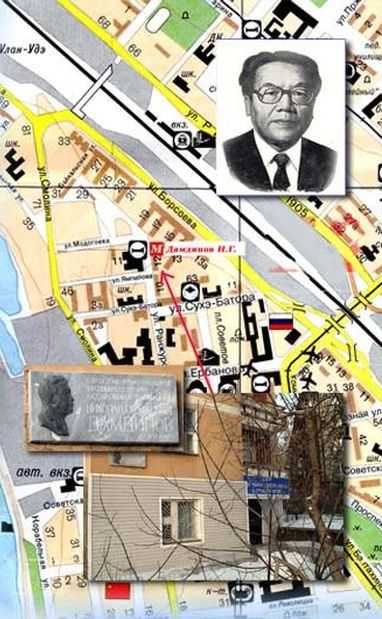 |
Ц. ДОН (1905 - 1938 гг.)Ц. Дон (настоящее имя — Цыденжап Дондупович Дондубон) – бурятский писатель, поэт, критик, журналист и государственный деятель, родился 31 марта (13 апреля) 1905 г. в улусе Аяга Бичурского аймака (ныне Бичурский район Бурятии) в семье крестьянина. В 1916 г. с отличием закончил Ново-Никольское училище. Открыл школу в своём родном улусе Аяга. В 1922 г. окончил полуторамесячные курсы учителей начальных классов в Хоринске, курсы волостных работников в Верхнеудинске. Работал сотрудником газеты Мухоршибирского аймака, с 1925 г. ответственным секретарем, зав. отделом, редактором газеты «Буряад-Монголой ?нэн», редактором журнала «Бата Зам». Ц. Дон вместе с С. Ширабоном и Х.Намсараевым явились инициаторами создания в Бурятии самостоятельной писательской организации в 1933-1934 годах. С 1933-1936 гг. возглавлял Народный комиссариат просвещения Бурят-Монгольской АССР. Член Союза писателей СССР с 1934 года. С 1936 по 1937 гг. работал в Буриздате. 23 сентября 1937 г. арестован, 14 июня 1938 г. расстрелян. Реабилитирован посмертно 20 апреля 1957 г.Ц. Дон — один из основоположников бурятской художественной литературы. Очерки и рассказы печатались газетах, журналах «Байкал», «Байгал», «Вершины». Автор рассказов, литературно-критических статей, первых бурятских повестей. Опубликованы книги: «Луна в затмении» («Хиртэ?эн ?ара», 1932), «Отрава от брынзы» («Брынзын санха», 1935), «Yбгэн Жэбжээнэй мэргэн» (Мудрый Жэбжээнэй-мэргэн, 1964), «Зохёолнууд» (Сочинения, 1958; 1988), «Затмение луны: повести» (М., 1980). Писал на бурятском и русском языках. Занимался переводческой работой. Ц.Доном были переведены на бурятский язык сборник речей В.И Ленина, Конституция СССР, произведения И.А. Крылова, А.С. Пушкина, Л. Кассиля, «Приключения Мюнхгаузена» Распэ. В 1987 г. именем Ц.Дона была названа Хонхолойская начальная школа, ежегодно проводится первенство по вольной борьбе на призы Ц.Дона. 15 апреля 2015 г. в Доме Печати Улан-Удэ состоялось торжественное открытие мемориальной доски к 110-летнему юбилею известного деятеля республики Цыденжапа Дондубона, более известному под псевдонимом Ц. Дон. |
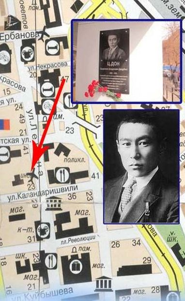 |
ЖАЛСАРАЕВ ДАМБА ЗОДБИЧ (05.12.l925 -21.01.2002 гг.)Поэт. Родился в с. Додогол Хоринского района Бурятии. Работал в колхозе. В январе 1943 г. был призван в армию. Окончив военное училище, служил в пограничных войсках. Принимал участие в войне против Японии. В 1952 г. демобилизовался.Окончил Высшие литературные курсы при Литературном институте им. М. Горького (1956 - 58 гг.). Работал ответсекретарем Союза писателей Бурятии, в обкоме партии, корреспондентом ТАСС по Бурятии. Свою творческую работу Д. Жалсараев совмещает с активной общественной деятельностью. 8 лет был председателем правления Союза писателей, 16 лет - министром культуры республики. Будучи председателем Российского комитета по связям с писателями стран Азии и Африки, участвовал в работе 4, 5 и 7 конференций писателей афро-азиатских стран. Первая книга стихов Д. Жалсараева «Слово о правде» вышла на родном языке в 1950 г. С тех пор им выпущено около 40 книг стихов и поэм, выходивших у нас в стране и за рубежом, общим тиражом более миллиона экземпляров. Широко известны такие его книги, как «Сказ о баторе», «Прибайкалье мое», «Душа земли», «Бурятские напевы», «Земные голоса», «Дороги и времена» и др. Ему принадлежат тексты многих популярных песен, ораторий и кантат. Д. Жалсараев является автором слов Гимна РБ «Таежная, озерная, степная…» Издал несколько книг для детей. Член Союза писателей СССР (1952). Народный поэт Бурятии. Лауреат Государственной премии Бурятия. Заслуженный работник культуры России (1985) Награжден пятью орденами, многими боевыми и трудовыми медалями. Мемориальная доска находится по адресу ул. Коммунистическая, 44. |
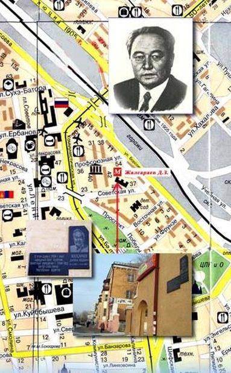 |
КАЛАШНИКОВ ИСАЙ КАЛИСТРАТОВИЧ (09.08.1931 – 30.05.1980 гг.)Прозаик. Родился в с. Шаралдай Мухоршибирского района Бурятии. Работал пастухом, токарей, лесорубом, в газете «Молодежь Бурятии». Учился в вечерней школе. Окончил Высшие литературные курсы при Литературном институте им. М. Горького. Длительное время работал ответсекретарем Союза писателей республики. Автор повестей «Подлесок» (1963), «Через топи» (1969), «Расследование» (1980), романов «Последнее отступление» (1961), «Разрыв-трава» (1970). Последний роман вышел также в 1972 г. в «Роман-газете». Вершиной творчества писателя является исторический роман «Жестокий век», неоднократно изданный в Улан-Удэ и Москве. В последние годы жизни писатель работал над романом «Не поле перейти», который остался незавершенным при жизни. Но в 1999 году роман издан в сборнике, подготовленном Общественным фондом им. И.Калашникова. Член Союза писателей СССР (1963). Народный писатель Бурятии (1973). Лауреат Государственной премии Бурятии (1970). Награжден медалями. В ноябре 1996 г. Постановлением Правительства Республики Бурятия Центральной городской библиотеке было присвоено имя И.К. Калашникова, Народного писателя Бурятии. По улице Калашникова на территории школы №47 в июле 2012 г. открыт памятник И.К. Калашникову. Центральной городской библиотекой создана полнотекстовая база данных "Исай Калистратович Калашников", которая включает в себя произведения писателя и документы о жизни и творчестве. Мемориальная доска находится по адресу ул. Борсоева, 71. "Присвоить имя народного писателя Бурятской АССР участку улицы от пр. Строителей до 44 квартала Октябрьского района города." - Решение исполкома Улан-Удэнского горсовета народных депутатов от 03.04.1984 №61; Ф.Р.-661. Оп.4. Д.1317. Л.9. |
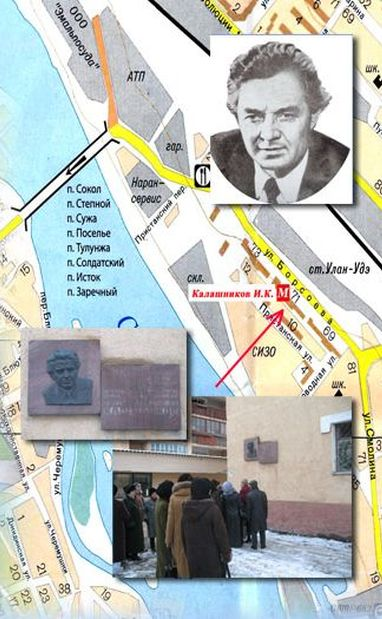 |
КАРНЫШЕВ КОНСТАНТИН ГРИГОРЬЕВИЧ (1927 - 2004 гг.)Прозаик, журналист, родился 20 октября 1927 года в с. Оймур Кабанского района Бурятии.Родился в крестьянской семье. Учился в Оймурской семилетней и Кударинской средних школах. В 1943 г. приписав себе возраст, отправляется в армию на Тихоокеанский военно-морской флот, остров Русский. Получив военную специальность торпедного электрика, служит в составе бригады подводных лодок. В 1945 году участвует в боевых операциях в освобождении Кореи, десантах в Чхонжин и Хыннам. В боях за Порт-Артур был ранен и демобилизовался с флота в 1947 г., став кавалером ордена Отечественной войны II степени. В 1954 г. становится корреспондентом газеты «Молодежь Бурятии» и начинает увлекаться журналистикой. Получив высшее журналистское образование, окончив в 1966 г. Хабаровскую высшую партийную школу, К. Карнышев от рядового журналиста газет вырос до редактора Бурятского радиовещания, редактора малотиражной газеты «За педагогические кадры» в Бурятском государственном педагогическом институте им. Д. Банзарова, где одновременно преподавал основы журналистики на факультете общественных профессий. В середине 1960-х годов, имея богатый жизненный опыт, К. Карнышев начинает писать художественные очерки и рассказы. Они печатались в республиканской прессе и в журналах «Байкал», «Октябрь» (Москва), «Дальний Восток» (Хабаровск), «Вершины» (Улан-Удэ). В 1970 г. за рассказ «Кормилица» автор был удостоен Государственной премии Бурятии. Автор сборников повестей и рассказов – «Сугробы» (1971), «Странствия Горбоносого» (1975), «Хрустальные льды» (1976), «Сокровенные желания» (1986), «Повести» (1988), «Люди и звери» (1991), «Чудодей» (2002), «Смертельный загон» (2004). Книга «Чудодеи» была признана лучшей книгой Бурятии 2002 года. Многогранна была общественная деятельность К. Карнышева – член Совета старейшин при Президенте Республики Бурятия, Комиссии по правам человека при Правительстве РБ, председатель Русского этнокультурного центра, член совета фонда Байкала, действительный член Географического общества России, Член Союза писателей СССР с 1983 г. В Улан – Удэ на фронтоне здания по адресу ул. Тобольская 73 в 2010 г. открыта мемориальная доска памяти Народного писателя Бурятии, лауреата государственной премии РБ, заслуженного работника культуры РБ, видного общественного деятеля, участника Великой Отечественной войны Константина Георгиевича Карнышева. |
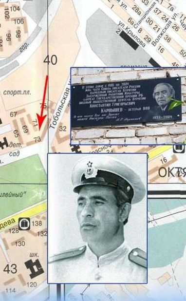 |
ЛИПАТОВ ВЛАДИМИР ВИКТОРОВИЧ (14.09.1940 – 04.1999 гг.)Поэт. Родился в г. Улан-Удэ. Окончил строительное отделение железнодорожного техникума заочно Литературный институт им. М. Горького. Служил в Советской армии. Работал разнорабочим, каменщиком, техником-архитектором, журналистом, горнопроходчиком на строительстве БАМа, редактором Бурятского книжного издательства и журнала «Ласточка». В. Липатов - автор шести поэтических сборников: «Вера» (1972), «Эхо памяти» (1975), «Надежда и любовь» (1979), «Первый час весны» (1982), «Сентябрь» (1985), «Багульник» (1985), вышедших в Улан-Удэ и Москве. Стихи поэта печатались в журналах «Байкал», «Москва», «Советский воин», «Сибирские огни», «Звезда Востока», альманахе «Сибирь», еженедельнике «Литературная Россия». Перу поэта принадлежит книга очерков «Небо пилота» (1978), венки сонетов «Байкал», «Твоя любовь», поэмы «Смеющийся камень», «Полтора Ивана». Известен и как переводчик бурятских и монгольских поэтов. Член Союза писателей СССР (1982), Народный поэт Республики Бурятия (1999). Мемориальная доска находится по адресу ул. 50 лет Октября, 4. |
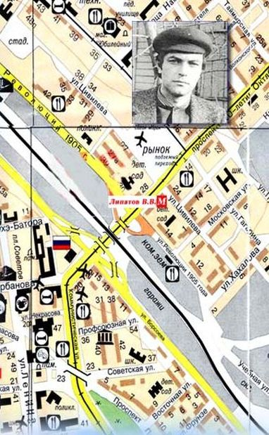 |
ДОЛЬЁН МАДАСОН (1911 - 1984 гг.)Мадасон Дольён (Илья Николаевич Мадасон) – поэт, фольклорист, родился 10 января 1911 г. в с. Эрхэдей Осинского района Усть-Ордынского бурятского округа Иркутской области. Окончил Боханскую девятилетнюю школу, в течение многих лет работал учителем бурятского языка и литературы в школах Боханского и Тункинского районов, работал также киномехаником, библиотекарем, редактором и научным сотрудником. В 1935-1937 гг. широкую известность в республике получил Тункинский литературный кружок, созданный Д. Мадасоном, ставший впоследствии крупнейшим в Бурятии литературным объединением им. Мунко-Саридака. В годы Великой Отечественной войны Д. Мадасон прошел дорогами войны, где в одном из боевых сражений был контужен. С юных лет проявилась у него склонность к собиранию фольклорных произведений. В довоенные годы, работая научным сотрудником в секторе фольклора Бурят-Монгольского государственного научно-исследовательского института языка, литературы и истории, собрал и записал множество произведений устного народного творчества бурят: пословицы, поговорки, песни, загадки, предания, сказки, улигеры.
Записанные Д. Мадасоном со слов сказителя Пёохона Петрова унгинской версии эпоса «Абай Гэсэра» были использованы в сводном варианте бурятского героического эпоса. В послевоенное время Д. Мадасон работал научным сотрудником в Институте общественных наук Бурятского филиала СО АН СССР, был консультантом 3-го издания Большой советской энциклопедии по бурятской литературе. Собранные им материалы, составили его именной фонд в хранилище восточных рукописей ИМЛИ СО РАН. Дольён Мадасон – один из старейших поэтов Бурятии, первые стихи напечатаны на страницах газет в 1928 г. Книга стихов «Хабарай гэрэл» (Весеннее сияние) опубликована в 1932 г. В последующие годы выпускает сборники стихов «Лирикэ» (1941), «Сэсэгтэ нуга дээрэ» (На цветущих лугах, 1950), «Х?хын дуунай ?е» (Пора кукования кукушек, 1958), «Эртын хабар» (Ранней весной, 1970). В Москве в издательстве «Молодая гвардия» в 1959 г. вышел сборник «Лирические стихи». Д. Мадасон является автором сборника рассказов «Тень» (1954), написанным в соавторстве с Н. Цыбеновым. Для детского круга чтения он написал книги «Боосоото урилдаан» и «Две сказки» (1964). Его произведения вошли в сборники: «Антологию литературы Бурятии ХХ – начала ХХI века» (Улан-Удэ, 2010), «Таёжная, озёрная, степная» (2012), «Свет памяти» (Улан-Удэ, 2012), «Антология произведений писателей Бурятии о Великой Отечественной войне 1941-1945 гг.» (Улан-Удэ, 2014). По признанию многих ученых, литературных критиков и писателей, в деятельности Д. Мадасона сплелись талант проникновенного лирика и трудолюбие скрупулезного и настойчивого искателя жемчужин народной мудрости. Член Союза писателей СССР с 1934 г. Заслуженный работник культуры Бурятии. Мемориальная доска писателя была открыта 27 ноября 2015 г. по адресу пр. Победы, 11 |
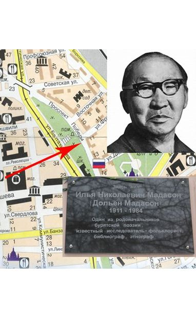 |
НАМЖИЛОВ ЧИМИТ-РЭГЗЭН НАМЖИЛОВИЧ (1926 - 1990 гг.)Поэт. Родился в урочище Жэбхэсэн Узонского сомона Агинского национального округа Читинской области. После восьмилетки работал в родном колхозе, служил в армии. С 1949 г. Ч-Р. Намжилов работал в редакции республиканской газеты «Буряад унэн», редактором журнала «Байкал» и зам. председателя Гос. телерадио. После окончания ВПШ более пяти лет (1967—1972 гг.) являлся зам. отделением ТАСС в Монголии. С 1931 г.- ответсекретарь Союза писателей Бурятии. Ч-Р. Намжилов - автор более двадцати поэтических сборников, вышедших в Улан-Удэ и Москве. Первый сборник «Ясный день» вышел в Улан-Удэ в 1952 г. С тех пор им издано на родном языке: «Родник в степи» (1956), «Золотая колыбель» (1958), «Ташкентская тетрадь» (1960), «Смешная пестрая книжка» (1963), «Сердце матери» (1964), «Караван цветов» (1965), «Цена хлеба» (1966), «Избранное» (1973), «В стране Сухэ-Батора» (1975), «Полнолуние» (1980), «Четыре времени года» (1986). На русском языке вышли в Улан-Удэ «Сердце матери» (1968), «Стихи» (1973), «Родник в степи» (1978), «Цена хлеба» (1982), «Речка моя Жэбхэсэн (1989), и в Москве - «Удивительный наездник» (1967) и «Счастливое путешествие» (1980). На монгольском языке в Улан-Баторе вышли «Стихи» (1961), «Сердце .матери» (1968), «Смешная пестрая книжка» (1970). Известен как поэт-песенник, детский писатель и переводчик. В его переводе в Улан-Удэ изданы: «Детям» Маяковского, «Сухэ-Батор» Ц. Гайтава, антология монгольской поэзии «Алтан соембо» (1974), «Избранное» Д. Нацагдоржа, 1985), «Сокровенное сказание» (1990). Член Союза писателей СССР (1959). Народный поэт Бурятии (1990, посмертно). Заслуженный работник культуры Бурятии и России Имеет награды СССР в МНР. Мемориальная доска находится по адресу ул. Коммунистическая, 45. |
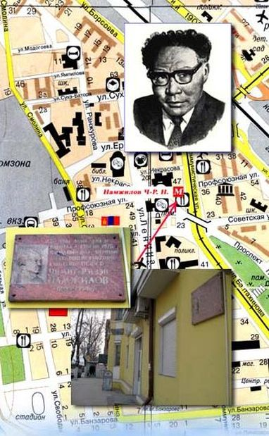 |
НАМСАРАЕВ ХОЦА НАМСАРАЕВИЧ (1889 - 1959 гг.)Один из основоположников бурятской советской литературы. Родился в улусе Кижинга в Бурятии. Когда будущему писателю было три года, его усыновил Намсарай Цыбикоз. «По достижении восьмилетнего возраста мне посчастливилось попасть к местному грамотному старику Дагбе Бадлуеву, который и обучил меня монгольской грамоте, - пишет писатель в автобиографии. В сентябре 1918 г. он назначается учителем во вновь организованную Верхне-Кижингинскую школу, где преподавание велось на бурятском языке. К 1919 г. относится начало его литературной деятельности. Автор пьес «Темнота» (1919), «Оракул Дамби» (1920), «Темная жизнь» (.1921), «Кнут тайши» (1948) и многочисленных стихов и первой в бурятской поэзии поэмы «Слово старого Гэлэна» (1926), романа «На утренней заре» (1959), повестей «Цыремпил» (1935), «Однажды ночью» (1938), «Луч победы» (1942) сборника рассказов «Так было» (1936) и мн. др.. произведений X. Намсараев внес значительный вклад в развитие бурятской литературы. Ему принадлежит большая заслуга и в развитии детской литературы. Тонкий знаток фольклора, X. Намсараев осуществил литературную обработку и опубликовал такие народные поэтические шедевры, как «Аламжи Мэргэн», «Сагаадай Мэргэн», «Харалтуур хаан». С 1957 по 1959 гг. впервые в истории литературной жизни Бурятии выходит пятитомное собрание сочинение X. Намсараева (переиздано в 1986—1989 гг.). Член Союза писателей СССР (1934). Заслуженный деятель искусств Б-МАССР (1943). Неоднократно избирался депутатом Верховных Советов СССР и Бурятии, членом правления Союза писателей СССР и Бурятии. Награжден орденом Ленина и двумя орденами Трудового Красного знамени, многими медалями. Мемориальная доска находится по адресу ул. Коммунистическая, 45. "Переименовать в честь народного писателя Бурятской АССР Хоца Намсараева улицу в Железнодорожном районе города" - протокол исполкома У-У гор. Совета депутатов трудящихся от 21 мая 1969 №9; Ф.Р.-661. Оп.4. Д.664. Л. 285; - Решение исполкома Улан-Удэнского исполкома горсовета депутатов трудящихся от 21.05.1969 №82; Ф.Р.-661. Оп.4. Д.664. Л.285. |
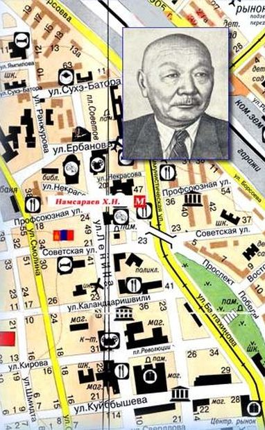 |
НИМБУЕВ НАМЖИЛ ШИРАБОВИЧ (1948 - 1971 гг.)Поэт. Родился в г. Улан-Удэ. Сын известного бурятского поэта Ш. Нимбуева. После окончания средней школы поступил в Литературный институт им. М. Горького. Работал в газете «Молодежь Бурятии» и журнале «Байкал». Стихи начал писать со школьных лет, но в отличие от отца на русском языке. Печатался в республиканской периодике, журнале «Байкал», посмертно, в антологии современной, бурятской поэзии (1983). Автор поэтического сборника «Стреноженные молнии» (1974, Улан-Удэ), дважды переизданного в московском издательстве «Современник» (1975, 1979). Его детская повесть «Мальчишка с бантиками», написанная с соавторстве с молодым калмыцким прозаиком Олегом Манджиевым, была издана в Элисте (1974) к Улан-Удэ (1988). Занимался также переводческой деятельностью, писал пьесы, повести, рассказы, статьи по теории белого стиха и верлибра. Мемориальная доска находится по адресу пр. Победы, 7а. |
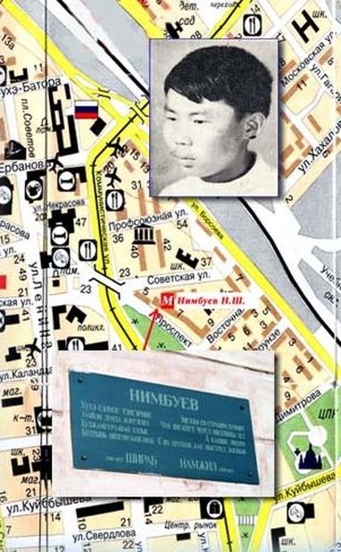 |
НИМБУЕВ ШИРАБ НИМБУЕВИЧ (1910 - 1971 гг.)Поэт. Родился в с. Маракта Еравнинского района Бурятии. После окончания средней, школы учился на рабфаке, в Комвузе. Преподавал в бурятской начальной школе, был редактором детской литературы Бурятского книжного издательства. С 1940 по 1945 гг. работал в Монголии, в консульстве СССР - в Алтан-Булаке. С 1946 г. - корреспондент республиканской газеты «Буряад унэн». Долгое время, до ухода на пенсию, работал редактором Бурятского книжного издательства. Стихи пишет с 1931 г. Автор 16 сборников стихов на. родном языке, включая «Песни поэта» (1943) - первый поэтический сборник. Это - «Радость» (1948), «Песня о счастье» (1958), «Песни души» (1962), «Веселый Зархай» (1966), «Избранное» (1969), «Сокровенное слово» (1972), «Славлю время прекрасное» (1980) и др. На русском языке вышли «Песнь о Байкале» (1959, М., «Советский писатель»), «Приключения Зархая» (1967, Улан-Уда). Член Союза писателей СССР (1939). Заслуженный работник культуры Бурятии, Награжден медалями. Мемориальная доска находится по адресу пр. Победы, 7а. |
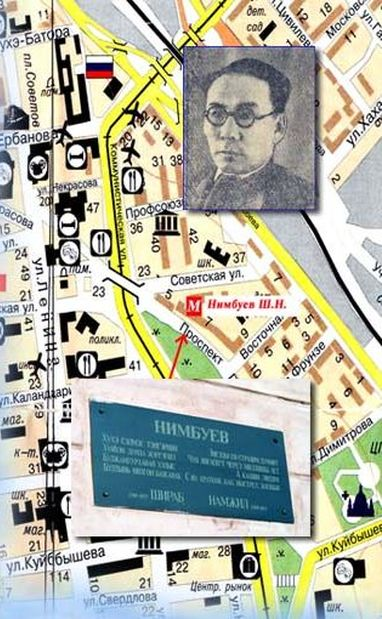 |
ПЕТОНОВ ВЛАДИМИР КОНСТАНТИНОВИЧ (10.05.1932 - 1993 гг.)Поэт. Родился в с. Бурят-Янгуты Осинского района Усть-Ордынского национального округа Иркутской области. Окончил Иркутский государственный университет (1957) и Высшие литературные курсы при Литературном институте им. М. Горького (1977). Работал в леспромхозе, в газете «Молодежь Бурятии», на Бурятском .телевидении, редактором Бурятского книжного издательства, журнала «Байкал», директором Бюро пропаганды художественной литературы Союза писателей Бурятии.В. Петонов - автор около 20 сборников поэзии и прозы, вышедших в Улан-Удэ и Москве. Первый сборник стихов «Ветер с Байкала» на родном языке вышел в 1959 г. в Улан-Удэ. Выпустил 7 сборников стихов на бурятском языке: «Моя правая рука» (1968), «У очага» (1970), «Белой дорогой» (1972), «Держава ранних жаворонков» (1978), «Земли притяжение» (1981), «Аянга» (1987), а также две книги прозы «Моя веселая Сэсэгма» (1964), «Встреча с песней» (1965). На русском языке вышли в Улан-Удэ: «Стихи» (1973), повесть для детей «Моя веселая Сэсэгма» (1971), Иркутске - «Гортанные песни» (1991). В Москве изданы 6 сборников стихов: «Цветет багульник» {1966), «Цветостепь» (19741, «По кругу солнца» (1979), «Стальная тетива» (1982), «Держава ранних жаворонков» (1984) и «Земли притяжение» (1985). Известен и как поэт-песенник, переводчик, составитель 7 антологии и сборников, вышедших в Улан-Удэ и Новосибирске. Автор первого романа в стихах на бурятском языке «Земли притяжение» (1980). В его переводе вышел сборник А. Фадеева «Метелица» (1959) По его сценарию, в Иркутске снят документальный фильм «Зеркало Бурятии - Байкал». Член Союза писателей СССР (1967). Народный Поэт Бурятии (1992). Заслуженный работник культуры Бурятии. Поэт. Родился в с. Маракта Еравнинского района Бурятии. После окончания средней, школы учился на рабфаке, в Комвузе. Преподавал в бурятской начальной школе, был редактором детской литературы Бурятского книжного издательства. С 1940 по 1945 гг. работал в Монголии, в консульстве СССР - в Алтан-Булаке. С 1946 г. - корреспондент республиканской газеты «Буряад унэн». Долгое время, до ухода на пенсию, работал редактором Бурятского книжного издательства. Стихи пишет с 1931 г. Автор 16 сборников стихов на. родном языке, включая «Песни поэта» (1943) - первый поэтический сборник. Это — «Радость» (1948), «Песня о счастье» (1958), «Песни души» (1962), «Веселый Зархай» (1966), «Избранное» (1969), «Сокровенное слово» (1972), «Славлю время прекрасное» (1980) и др. На русском языке вышли «Песнь о Байкале» (1959, М., «Советский писатель»), «Приключения Зархая» (1967, Улан-Уда). Член Союза писателей СССР (1939). Заслуженный работник культуры Бурятии, Награжден медалями. Мемориальная доска находится по адресу ул. Ленина, 31. |
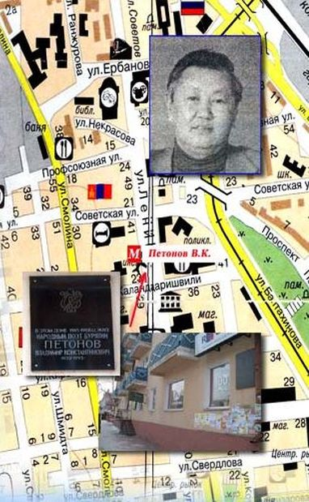 |
СТЕПАНОВ МИХАИЛ НИКОЛАЕВИЧ (1914 - 1984 гг.)Прозаик, переводчик. Родился в 1914 г. в Санкт-Петербурге. После окончания средней школы стал рабочим Охтинского химкомбината, затем перешел на журналистскую работу. В 1938 г. его пригласили работать в редакцию газеты «Бурят-Монгольская правда», где он проработал почти всю войну. В 1951 г. был назначен ответсекретарем Союза писателей Бурятии, а с 1955 г. переведен на работу в редакцию журнала «Байкал» заместителем главного редактора. Творческую деятельность начал как переводчик.Первый опыт перевода - роман «Доржи, сын Банзара» Ч. Цыдендамбаева получился удачным. Он перевел многие произведения бурятских писателей, в т. ч. романы X. Намсараева «На утренней заре», Б. Санжина «Путь праведный», Ч. Цыдендамбаева «Вдали от родных степей», пьесу Н. Балдано «У истока родника»». Перевел и издал сборники бурятских народных сказок «Бурятские сказки» (Улан-Удэ, 1959), «Меткая стрела» (Новосибирск, 1973). Ему принадлежит прозаический пересказ бурятского героического эпоса «Карающий меч Гэсзра» (1964). Как прозаик известен по «Байкальской повести» изданной в Улан-Удэ (1956), а затем в Москве, роману «Ночь умирает с рассветом» (1963), переизданному за прошедшие 30 лет шесть раз. В 1979 г. в Улан-Удэ вышел его новый роман «На Тургэн-реке». В последние годы жизни писатель работал над второй книгой романа. Член Союза писателей СССР. Народный писатель Бурятии. Заслуженный работник культуры: России (1974) и Бурятии. Награжден орденом «Знак Почета», медалями. Мемориальная доска находится по адресу пр. Победы, 10. |
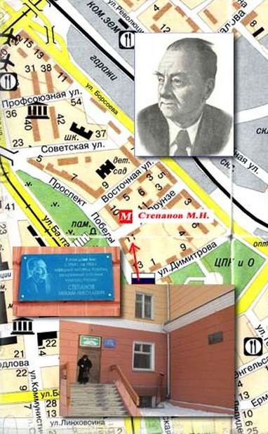 |
ТУМУНОВ ЖАМСО ТУМУНОВИЧ (15.02.1916 - 13.01.1955 гг.)Прозаик, поэт, драматург. Родился в с. Табтанай Агинского национального округа Читинской области В 1934 г. после окончания Табтанайской ШКМ был командирован в Улан-Удэ на учебу в пединститут. В 1935 г. работал учителем начальной школы в Aгe. В 1937-1939 гг. учился в сельхозшколе в Улан-Удэ. Затем работал в Бурятском книжном издательстве. Участник Великой Отечественной войны. С 1941 по 1946 гг. был на фронте, ранен, имеет боевые награды. После демобилизации из армии работал ответсекретарем Союза писателей Бурятии. Учился в ВПШ.В последние дни жизни работал начальником управления по делам искусств при Совмине Бурятии. Рано начав свой творческий путь со стихов и одноактных пьес в середине 30-х годов, уже в 1938 г. писал драму «Сэсэгма». Сборник его пьес вышел в 1940 г. в Улан-Удэ. Выпустил на родном языке 4 сборника стихов и поэм: «По зову матери» (1942), «Сухэ-Батор» (1946), «Гимн победы» (1948) и «Новые стихи» (1950). В Москве вышли два поэтических сборника: «Утро на Байкале» (1949) и «Сухэ-Батор» (1950). В 1949 г. Ж. Тумунов опубликовал «Степь проснулась» - первый роман бурятской советской литературы, выдержавший несколько изданий в Улан-Удэ, Москве и за рубежом. Автор романа «Золотой дождь» (1956) и сборника рассказов «Степной орел» (1942, 1975). Член Союза писателей СССР (1939). Награжден орденами Отечественной войны I и II степеней, тремя медалями. Мемориальная доска находится по адресу пр. Победы, 11. Улица, названная именем писателя, находится в Железнодорожном районе города, пос. Аршан. |
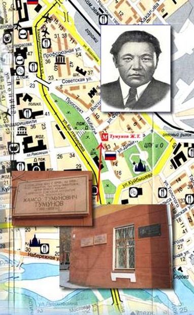 |
УЛЗЫТУЕВ ДОНДОК АЮШЕЕВИЧ (05.12.1936 - 1972 гг.)Поэт. Родился в с. Шибертуй Бичурского района Бурятии. После окончания местной средней школы в 1956 г. работает в Бурятском книжном издательстве. Окончил Литературный институт им. М. Горького (1963). После окончания института работал в журнале «Байкал».Первое стихотворение Д. Улзытуева было опубликовано в 1953 г.г в газете «Буряад унэн». Печатался в журналах «Байкал», «Огонек», «Юность», «Смена», «Дружба народов». Он - автор 17 поэтических сборников, изданных в Улан-Удэ и Москве. Из них 11 издано на родном языке: «Три тайны пера» (1957),), «Круговорот» (1968), «Козленок» (1969), «Эхо времени» (1970), «Большой перевал» (1972), «Страна ая-ганги» (1974), «Ая-ганга» (1986). В Москве вышли в свет 6 книг стихов: .«Млечный путь» (1961, «Сов. пис»), «Избранная лирика» (1964, «Мол. гв.»), «Олений рог» ((1965, «Сов. пис.»), «Большой перевал» (1970; «Сов. Россия»), Ая-ганга» (1974, «Современник»), «Напев» (1983, «Современник»). Сборники его стихов изданы также на монгольском, болгарском и латышском языках. Известен и как поэт-песенник. Перу поэта принадлежат две лирико-публицистические книги «Беспокойное сердце» (1962) и «У отрогов Бурин-Хана» (1971), изданные на родном языке. На родине поэта проводятся Улзытуевские чтения. В 1993 г. в Улан-Удэ создан Фонд им. Д. Улзытуева. Член Союза писателей СССР. Мемориальная доска находится по адресу ул. Геологическая, 24. |
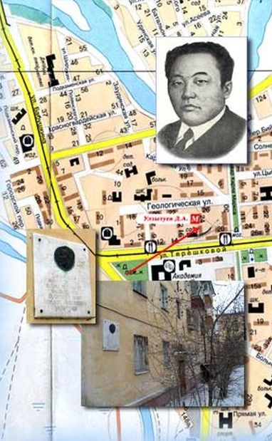 |
ФИЛИППОВА ИРИНА ИВАНОВНА (1935 - 2009 гг.)Ирина Ивановна Филиппова – заслуженный работник культуры Республики Бурятия, член Союза писателей России, лауреат премии ЦК ВЛКСМ, номинант международной премии «Филантроп». Ирина Филиппова литературным творчеством начала заниматься с 1960 г., работала на радио и в газетах «Локомотив», «Молодежь Бурятии». В большую поэзию её благословил народный поэт Бурятии Николай Дамдинов. Она – автор шести поэтических сборников и трех публицистических книг, посвященных героям Бурятии: «Пока летит звезда» (1987), «Корни» (1993), «Душа любить не разучилась» (2000), «Мой чарующий край» (2001), «Азбука и стихи для детей» (2005), «Заблудилась заря в лугах» (2008), документальных повестей «Память сердца» (о Николае Лимонове), «Прикоснись сердцем к подвигу» (о герое-пограничнике Николае Петрове). Несмотря на то, что тяжелая болезнь давно приковала ее к постели, открытость, острый ум и горячее сердце собирали вокруг нее множество друзей и поклонников. Множество нитей связывали ее с поэтами, музыкантами, художниками, журналистами, литературно-музыкальным объединением «Олимп». 6 декабря 2009 г. на доме 32 по проспекту 50-летия Октября, где жила Ирина Ивановна Филиппова, появилась мемориальная доска. Близкие люди знали ее как человека тонкой и светлой души и огромной стойкости и мужества. |
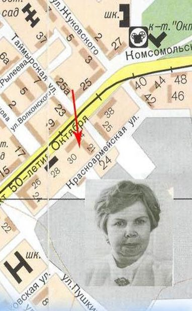 |
МУНГОНОВ БАРАДИЙ МУНКУЕВИЧ (1922-17.12.1989 гг.)Прозаик. Родился в улусе Кусота Хилокского района Читинской области. Тринадцатилетним подростком он начал трудовую деятельность: работал в чабанской бригаде, прицепщиком на тракторе. В январе 1942 г. призывается в Советскую армию. В качестве снайпера участвует в боях с фашистскими захватчиками западнее Москвы. В марте 1942 г. после тяжелого ранения был отправлен домой. Дома получает среднее сельхозобразование, работает агрономом. В 1947 г. стал работать в газете "Буряад-Монголой унэн", где проработал 12 лет. В 1961-63 гг. учится на Высших литературных курсах при Литературном институте им. М. Горького. Позже работал зав. отделом прозы журнала "Байкал". Первое произведение Б. Мунгонова было опубликовано в 1948 г. (поэма "Охотники"). Известны, кроме многочисленных сборников рассказов и очерков, такие повести, как "Белый месяц" (1962), "Юность героя" (1967), "Не все тихо в тишине" (1969), "Черный ветер" (1970). Наиболее полно проявился талант писателя в многоплановом романе "Хилок наш бурливый" (1959), ставшем заметным явлением в бурятской литературе. Роман неоднократно издавался в Москве, вышел в "Роман-газете". Успехом у читателей пользуется также его новый роман "Щедрое сердце" (1974, 1980); удостоенный Государственной премии республики. Член Союза писателей СССР. Заслуженный работник культуры Бурятии. Лауреат Государственной премии Бурятии. Награжден орденами Красной Звезды, Отечественной войны I степени, медалями. Постановление Администрации г. Улан-Удэ от 03.02.1993 №29; Ф.Р.-2056. Оп.1. Д.25. Л.6.: "Присвоить имя писателя, Заслуженного работника культура и лауреата Гос. премии Республики Бурятия Барадия Мункуевича Мунгонова, улице в пос. Восточный Железнодорожного района.". |
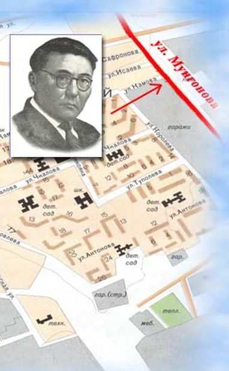 |
АДРЕС
ул. Ленина, 17,
Улан-Удэ, Республика Бурятия
ДИЗАЙН И РАЗРАБОТКА
Коннов Е.С.
Email: admin@cbs-ulan-ude.ru
Телефон: +7 (964) 4039264
КОНТАКТЫ
Email: cbskalashnikov@yandex.ru
Телефон: +7 (3012) 21-54-12
Факс +7 (3012) 21-54-12
ГРАФИК РАБОТЫ
9.00-19.00
суббота, воскресенье:
10.00-18.00